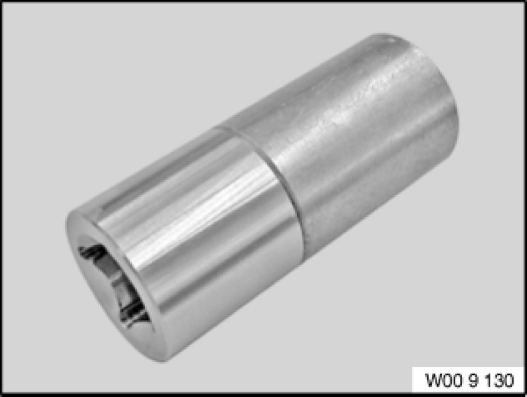
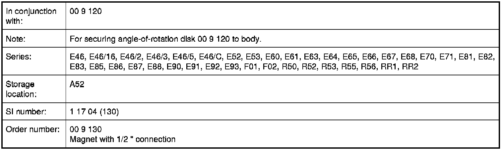

Operation CHARM
: Car repair manuals for everyone.
Home
>>
BMW
>>
2007
>>
X3 3.0si (E83) L6-3.0L (N52K)
>>
Repair and Diagnosis
>>
Tools and Equipment
>>
00 9 130 Magnet with 1/2 " Connection
00 9 130 Magnet with 1/2 " Connection
00 9 130 Magnet with 1/2 " connection
Minimum set: Mechanical tools

